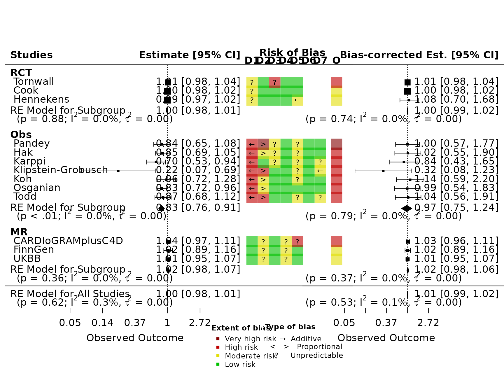

Triangulation example: Beta-carotene and CHD
Source:vignettes/beta-carotene-chd-example.Rmd
beta-carotene-chd-example.RmdThis example is based on data and analysis from Shapland et al., 2024.
Introduction
This tutorial demonstrates how to use the triangulate
package to perform a bias-adjusted meta-analysis of the association
between beta-carotene and coronary heart disease (CHD), using estimates
from diverse study designs (randomised controlled trial (RCT),
conventional observational study (Obs) and Mendelian randomisation
study(MR)).
1. Load CHD Dataset
The Metadta_all_CHD dataset compiles results from observational, randomised controlled trial (RCT), and Mendelian randomisation (MR) studies examining the association between beta-carotene exposure and coronary heart disease (CHD). It includes standardised effect estimates (log risk ratios) and standard errors, allowing for dose-response meta-analysis across different study designs.
# Data loaded from:
# “Res_MetaAll_beta_carotene_AllCHD_v2.Rdata” saved in the
# R/CHD/01_Prep_Data.R directory of the GitHub repository:
# https://github.com/CYShapland/BetaCarotene_CVD
load(system.file("extdata", "Res_MetaAll_beta_carotene_AllCHD_v2.Rdata", package = "triangulate"))2. Merge with RoB Assessments
rob_file <- system.file("extdata", "beta_carotene_data.xlsx", package = "triangulate")
RoB <- readxl::read_excel(rob_file, sheet = "main_data")
colnames(RoB)[2] <- "Author"
Metadta_RoB_CHD<-merge(Metadta_all_CHD, RoB, by="Author")
# format to robviz
colnames(Metadta_RoB_CHD)[which(colnames(Metadta_RoB_CHD)=="id")]<-"result_id"
colnames(Metadta_RoB_CHD)[which(colnames(Metadta_RoB_CHD)=="Study")]<-"type"
colnames(Metadta_RoB_CHD)[which(colnames(Metadta_RoB_CHD)=="Author")]<-"study"
colnames(Metadta_RoB_CHD)[which(colnames(Metadta_RoB_CHD)=="logRR")]<-"yi"
Metadta_RoB_CHD["vi"]<-Metadta_RoB_CHD["se_logRR"]^2
Metadta_RoB_CHD$study<-as.character(Metadta_RoB_CHD$study)
Metadta_RoB_CHD$type<-as.character(Metadta_RoB_CHD$type)
Metadta_RoB_CHD$Design<-as.character(Metadta_RoB_CHD$Design)
dat_CHDbias<-as_tibble(Metadta_RoB_CHD)3. Format & Validate Input
tri_dat_check(dat_CHDbias)
#> tri_dat_check(): All expected columns are present (mode = 'minimal').
# Replace NA with "None"
dat_CHDbias[is.na(dat_CHDbias)] <- "None"
# Convert to long bias format
dat_CHDbias_rob <- dat_CHDbias %>%
tri_to_long() %>%
tri_absolute_direction() %>%
tri_to_wide()4. Add Indirectness & Adjust Effect Estimate for It
In this example, indirectness is assumed to be missing (set to “None”) for all domains. However, in real analyses, indirectness judgments can and should be specified if available.
Also, the tri_append_indirect() function not only appends indirectness priors but also adjusts the effect estimate accordingly — therefore the pipeline adjusts the effect estimate by both bias and indirectness.
dat_CHDind <- dat_CHDbias %>% select(result_id, study, type, yi, vi)
for (j in paste0("d", 1:3)) {
dat_CHDind[[paste0(j, "j")]] <- "None"
dat_CHDind[[paste0(j, "t")]] <- "None"
dat_CHDind[[paste0(j, "d")]] <- "None"
}
# Convert to long and append
dat_CHDind <- dat_CHDind %>%
tri_to_long() %>%
tri_absolute_direction() %>%
tri_append_indirect(triangulate::dat_ind_values)5. Apply Bias Priors & Estimate Adjusted Effects
5.1 Define Custom Priors
The triangulate::dat_bias_values object contains the default priors for each domain and judgment combination. This step allows you to customize the priors (e.g. changing the additive mean for a particular domain), building on the default set.
custom_bias_priors <- triangulate::dat_bias_values %>%
add_row(
domain = 'all', j = 'critical',
bias_m_add = 0.36, bias_v_add = 0.2,
bias_m_prop = 0.12, bias_v_prop = 0.064
)5.2 Append priors and prepare data, and estimate adjusted effects
dat_CHDbias_prep <- dat_CHDbias %>%
tri_to_long() %>%
tri_absolute_direction() %>%
tri_append_bias(custom_bias_priors)6. Final data adjusted for both bias and indirectness
datCHD_final <- tri_prep_data(dat_CHDbias_prep, dat_CHDind)7. Generate Bias-Adjusted Plot
dat_CHDbias_final<-dat_CHDbias_rob %>% right_join(datCHD_final[c("result_id","yi_adj", "vi_adj")], by="result_id") # this data now contains original and adjusted estimates for plotting
tri_plot_bias_direction(dat_CHDbias_final)